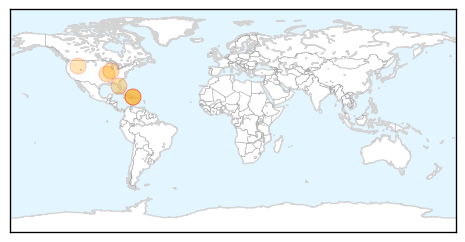

Mold/Fungal
30-Day Web Trend
0 alerts, 0 warnings
30-Day Twitter Trend
0 alerts, 0 warnings

Article Locations

Article Confidences

Top Articles:
-
No articles found for Jul 28, 2014
Top Tweets:
-
No tweets found for Jul 28, 2014
West Nile Virus
30-Day Web Trend
7 alerts, 1 warnings

30-Day Twitter Trend
0 alerts, 0 warnings

Article Locations
Article Confidences

Top Articles:
- 0.998
- West Nile returns to NJ, along with concern about new mosquito-borne illness
- 0.980
- Cases of mosquito-borne illnesses continue to rise
- 0.962
- Venomous snakes, virulent amoebas: Health hazards that can ruin a summer vacation
- 0.956
- West Nile threat quiet, but weather could change that
- 0.865
- New West Nile & Chikungunya cases in Mississippi
- 0.839
- West Nile Shows up in Mosquitoes in Idaho
- 0.716
- Fifth human case of new virus reported
Top Tweets:
-
No tweets found for Jul 28, 2014